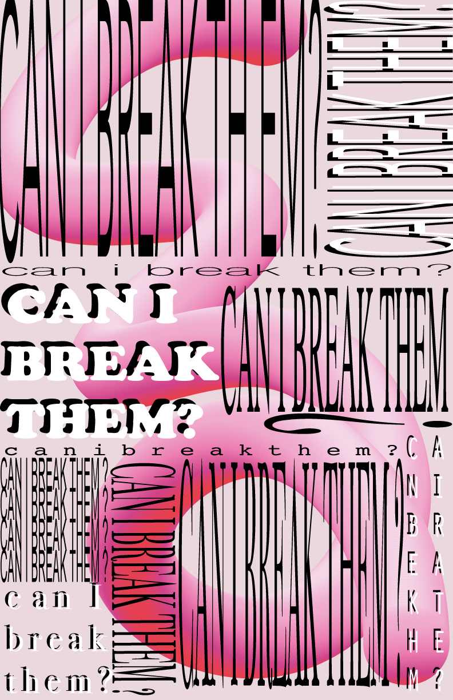
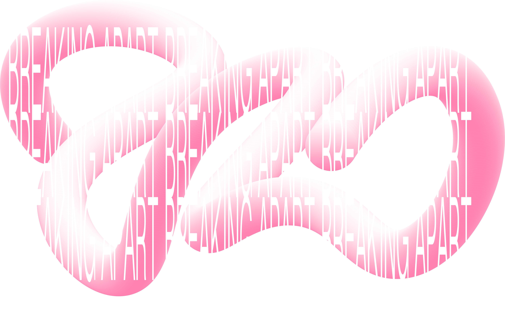

the mind is a scary area to be stuck in.
and sometimes we're there for longer than expected, or even wanted.
it's weird, the things that happen to people throughout a lifetime. we get broken, literally and figuratively, by things we never thought would hurt as much as it inevitably does. "can I break them?" is a thought brought by due to the need of power. power over food, power over people, power over objects, and power over society as a whole.
when one reaches the process of breaking said thing, and it's successful, it allows for it to come apart. (we been knew) and thus either die, or break into two.
so basically, i'm monkey.